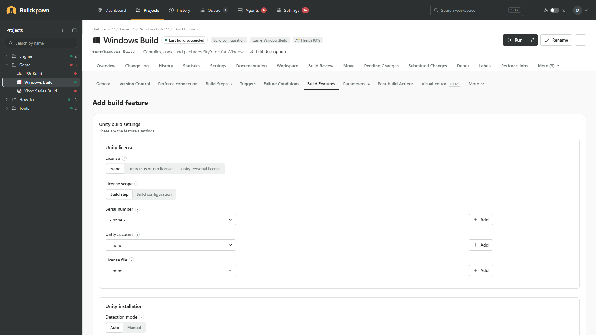

Unity build settings
Activates a Unity license around your Unity steps and sets the asset cache server.
When to use it
Use it when your agents have no signed-in, licensed Unity Editor. The full description of every field, with a worked example, is on Unity build settings in the Game builds section.

How to set it up
- Open the build configuration, click Settings, then Build Features. Click Add build feature and choose Unity build settings.
- Choose the License: None, Plus or Pro, or Personal.
- Choose the credentials, and the Unity version or folder.
- Click Save.
Every field
| Field | What it does | Default | Example |
|---|---|---|---|
| License | None, Unity Plus or Pro (serial number and account), or Unity Personal (a license file). | None | Unity Plus or Pro |
| License scope | Activate for each build step, or once for the whole build configuration. | Build step | Build configuration |
| Serial number | Secret text credential with the serial number. | None | unity-serial |
| Unity account | Username with password credential. | None | unity-build-account |
| License file | Secret file or Secret text credential with the .ulf file. | None | unity-personal-ulf |
| Detection mode | Auto picks an Editor the agent found. Manual uses the folder. | Auto | Auto |
| Unity version | Auto mode. Empty takes the latest Editor. | Empty | 6000.0 |
| Unity folder | Manual mode: the folder with the Editor. | Empty | C:\Program Files\Unity\Hub\Editor\6000.0.23f1 |
| Cache server address | A Unity Accelerator or cache server as host:port. | Empty | unity-cache.studio.example:10080 |
A worked example
One Unity Pro seat serves two Windows agents. License scope is set to the whole build configuration, so both Unity steps share one activation, and the seat is returned at the end. See the full example on the Unity build settings page.
What you see when it runs
The log has a block Activate Unity license before your Unity step, and Return Unity license after it. Secrets show as ********.
Problems and fixes
| Problem | What to do |
|---|---|
| The Unity Editor could not be started on this agent | Install Unity there, or choose Manual detection and name the folder. |
| Manual detection needs the folder | Fill Unity folder. |